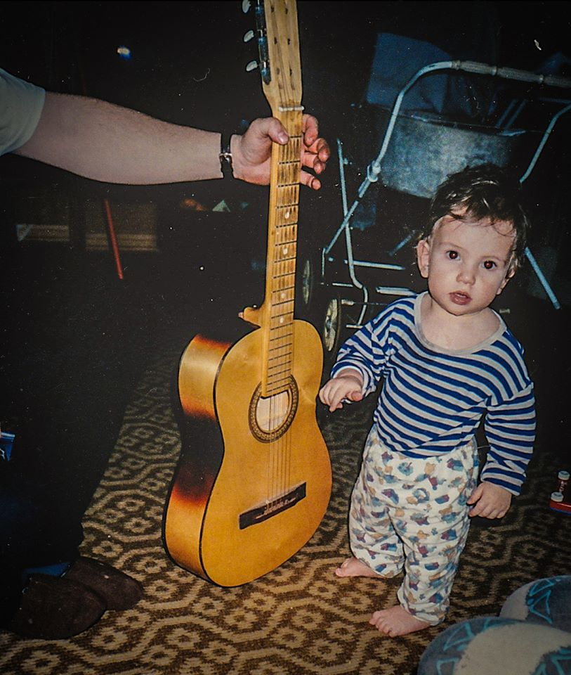
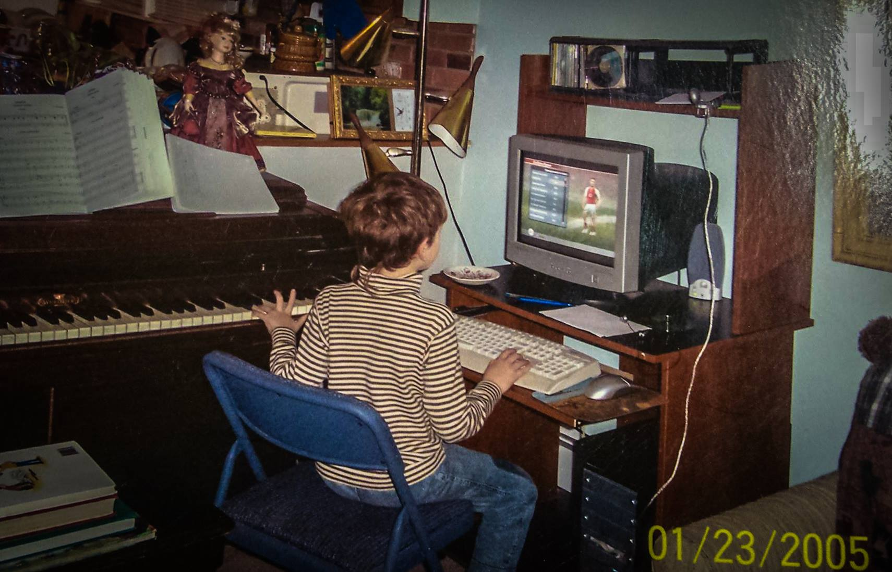

Word Count: 840
For as long as I remember, music has been an integral, key part of my life.
The first musical experience I distinctly recall was picking up a guitar and strumming along aimlessly to a CD at three years old. My passion for music was born then, and I was later invited to perform at a tribute concert for the artist whose CD I strummed along to. My enthusiasm for music has never waned since that day.
To this day, music plays a large variety of roles in my life. It is a form of creative expression, a catalyst for concentration, and an everpresent aspect of my life that allows for mnemonic association with various life events. I still remember what songs made me appreciate rock at the age of 8, pick up piano at the age of 6, and start playing guitar at the age of 13.
In fact, not a year since has gone by when music wasn’t a focal aspect of my life, activities, and personality, with each experience further enhancing my appreciation for the artform. A very significant portion of my mindspace is always occupied by music and composition, to the point that it often imposes on my mental space when I’m trying to do other things, because my mind is constantly racing with new ideas for songs and melodies. There’s a picture from my childhood that sums this phenomenon up best; in the picture, I’m sitting at a computer and playing a videogame with my right hand while the left is wandering off to a piano and absentmindedly playing some sort of long-forgotten melody.
To me, one of the best parts about music is just how vast and diverse it is as an art form. My current tastes span from various classical composers to synthwave, to extreme metal. I like to discover new music by attending concerts and using YouTube’s various discovery features to find new artists. I supplement this by keeping up with genre-specific subreddits, as well. Whenever an artist particularly catches my ear, I tend to do a bit more in-depth research, by looking into song meanings on Genius and reading about their work/inspiration in various interviews with publications.
Another vector of discovery I’ve taken to is asking new friends about their music tastes and looking up the artists they mention if I hadn’t heard them before. Doing this during my last co-op allowed me to discover Dance Gavin Dance and Old Gray - both very interesting artists that are rather dissimilar from what I usually listen to. In addition, this same process allows me to share my musical recommendation with them based off of what they mention, if I happen to know anything in roughly the same genre.
Aside from aiding in discovery, music has allowed me to engage with others in other ways, as I rather enjoy discussing music with friends and acquaintances. Music tends to be one of the most dominant discussion topics in my conversations regardless of whom I’m talking to, if the context is appropriate - it’s just one of the most universal, inoffensive topics of discussion that almost anybody has at least the tiniest amount of passion.
Writing music is my primary creative field, and one that allows me to musically engage with others. One of the closest bonds I have to my oldest friend is that we write music together, which allows both of us to express our emotions, often aiding one another in said expression via lyrical editing, or changing some aspect of the musical arrangement. This collaboration has spanned for over five years, and has at times been the only common interest the two of us had.
Musical performance is the final method of engagement I often employ in my interactions with people. Being a musician is a vital aspect of my identity, and sharing my music brings me a lot of joy. This in of itself opens up a lot of pathways for discussion, as learning people’s opinions of my music allows me to adjust my songwriting to better express myself.
My non-musical passions have had a profound impact on my tastes in music and composition methods - particularly my tutelage in computer science.I’ve opened my ears to music in other languages and electronic music because it is easier to write code to, since I don’t have to concentrate on the lyrics whatsoever for those genres. Additionally, my written lyrics have had a greater emphasis on repetition since I started college and delved into computer science - my prior work was often a lot more concept driven and structurally complex, but not necessarily as memorable, and often didn’t flow well. Simultaneously, this could just as easily been a natural progression of my songwriting career, so this speculation is just that - nonconclusive.
It's safe to say that music has had a profound effect in shaping my life leading up to this moment, and will continue to do so for quite some time. I can only hope that the direction in which it takes me is a good one.